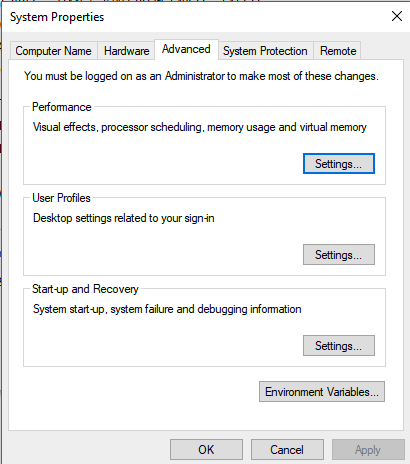
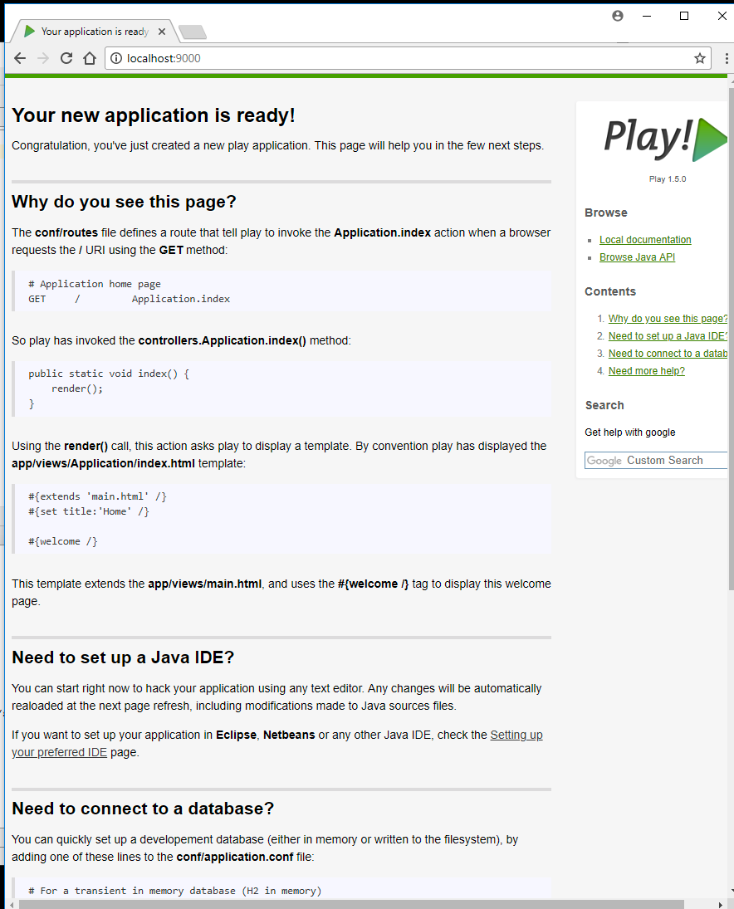
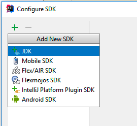

-
Objectives
Install and test Git + the Play Framework
-
Install Git
Install git for your platform:
Accept all the default options if they are presented (usually it is just Windows that offers options).
If the installation succeeded, then verify the version. Do this by opening a shell (command prompt on Windows) and enter the following:
git --versionThe system might respond with something like this:
git version 2.16.1.windows.4 -
Installing and Running Play
Windows
Visit the following site:
In particular, vist the download page:
On the this page, select and download
play-1-5.0.zip(the version number is very important)Unzip to somewhere on your PC - a good location might be:
C:\devOnce you have unzipped it, the folder might look like this:

In the above, the play archive has been downloaded and expanded in
c:\devWe need to now add the play folder to the
system path- which will enable us to run the play command from a command prompt.Windows
For Windows, you need to do the following:
Locate the "Computer" icon in explorer

Right click on this and select 'Properties':


Select 'Advanced System Settings':

Select 'Environment Variables':

Under "System Variables", locate and select the 'Path' entry:
Edit this entry:

Be pressing
New- add a new entry to this list:This new entry should be the path where play is installed. This could be
C:\dev\play-1.5.0as in the above example.NB: DO NOT DELETE ANY OF THE CURRENT VALUES OF THE PATH!
Press "Ok" all the way back and rerun the command prompt (close the one already open).
To test, just type "play" from a command prompt you should see something like this:
~ _ _ ~ _ __ | | __ _ _ _| | ~ | '_ \| |/ _' | || |_| ~ | __/|_|\____|\__ (_) ~ |_| |__/ ~ ~ play! 1.5.0, http://www.playframework.org ~ ~ Usage: play cmd [app_path] [--options] ~ ~ with, new Create a new application ~ run Run the application in the current shell ~ help Show play helpOr, if you did not manage to get the play folder on the path, then this command here should work (if you used the recommended folder structure)
C:\dev\play1-1.5.0\playHowever, it is best to ensure that the play command is on the system path.
Mac/linux Users
Edit your .bash_profile in your home directory and extend the path to include the play folder we have already extracted. It might look like this:
PATH=$PATH:$HOME/bin:/usr/local/bin:\ /usr/local/opt/node@8/bin:\ $HOME/dev/play-1.5.0 export PATHThis assumes you extracted the play archive into the dev folder in your home folder.
-
Create a Play Project
Back in the command line, change to a directory where you keep your web development projects and enter:
play new playdemoYou should get:
~ _ _ ~ _ __ | | __ _ _ _| | ~ | '_ \| |/ _' | || |_| ~ | __/|_|\____|\__ (_) ~ |_| |__/ ~ ~ play! 1.5.0, http://www.playframework.org ~ ~ The new application will be created in c:\course-work\web-development\lab07\playdemo ~ What is the application name? [playdemo]Press return when prompted for the name to accept the default (playdemo)
~ ~ OK, the application is created. ~ Start it with : play run playdemo ~ Have fun! ~Explore the generated folder - called 'playdemo'. It should contain these folders:
- app
- conf
- documentation
- lib
- modules
- public
- test
Explore the contents of the
app, 'conf' andpublic` folders. Use Sublime to this this (for the moment). -
Running a Play Application
Back in the shell, from inside the playdemo folder, type the following command:
play runPlay will respond with something like this:
~ _ _ ~ _ __ | | __ _ _ _| | ~ | '_ \| |/ _' | || |_| ~ | __/|_|\____|\__ (_) ~ |_| |__/ ~ ~ play! 1.4.4, http://www.playframework.org ~ ~ Ctrl+C to stop ~ Listening for transport dt_socket at address: 8000 16:30:33,586 INFO ~ Starting /Users/edeleastar/Dropbox/webdev/2012/dev/projects/spacebook 16:30:34,646 WARN ~ You're running Play! in DEV mode 16:30:34,894 INFO ~ Listening for HTTP on port 9000 (Waiting a first request to start) ... 16:30:58,912 INFO ~ Application 'Spacebook' is now started !Onn Windows, you may get a dialog from the firewall, asking for permission to run, which you should agree to.
Now run the browser, and navigate to:
you should see something like this:

Also notice that a log message will appear in the command window indicating that the app has started:
16:30:58,912 INFO ~ Application 'playdemo' is now started !To stop the application, press "Control+C" in the command prompt. If you refresh the browser window, then you should now get an error
Start the app again by typing 'play run' as above. Verify that the app has started by browsing/refreshing to:
Try this a few times to get used to starting/stopping the application
-
Import into Idea
Now, making sure you are still in the playdemo folder, run this command:
play idealizeThe system will respond with:
_ _ ~ _ __ | | __ _ _ _| | ~ | '_ \| |/ _' | || |_| ~ | __/|_|\____|\__ (_) ~ |_| |__/ ~ ~ play! 1.5.0, https://www.playframework.com ~ ~ OK, the application is ready for Intellij Idea ~ Use File, Open Project... to open "playdemo.ipr" ~Now, launch IntelliJ Idea, and select
Import Project:Navigate to the playdemo folder, and select the project folder to import:
Be sure to select the 'playdemo' only as shown above.
Once imported into Idea, it might look like this:

You may need to press the button on the extreme bottom left - and them expand the project window to reveal the project details:

Now select the
Applicationicon - to open the Java Application class:
The first time you run this - there may be an error visible on the title bar as `Project SDK is not defined'

Press the
Setup SDKbutton:
Press
Configure:Press
+:
Select
JDK
Navigate to the appropriate folders on your system and select the JDK for java 8.

Press
OKThis should remove the error - and the project should now be correctly configured.

-
Exercises
Exercise 1:
Using steps 02, 04 and 05, create another project - called
playdemo1and import into Idea. Experiment with having 2 project open simultaneously.